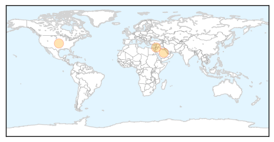
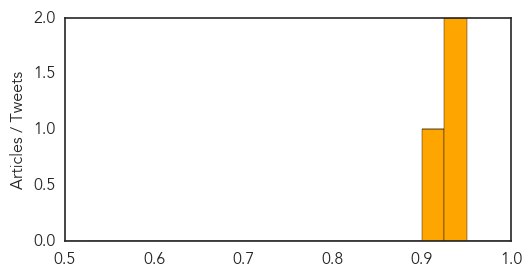
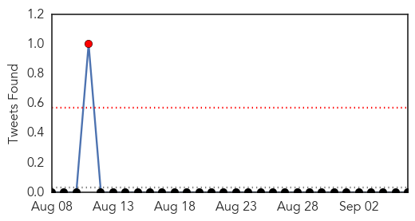

MERS
30-Day Web Trend
0 alerts, 1 warnings
30-Day Twitter Trend
7 alerts, 8 warnings
Article Locations
Article Confidences
Top Articles:
Top Tweets:
- 0.575
- AFD Blog `Saudi MOH Announces 7 New MERS Cases, 3 Fatalities' MERS-CoV http://t.co/NLyq1V2UVY
Meningitis
30-Day Web Trend
2 alerts, 0 warnings
30-Day Twitter Trend
0 alerts, 0 warnings

Article Locations

Article Confidences

Top Articles:
-
No articles found for Sep 06, 2015
Top Tweets:
-
No tweets found for Sep 06, 2015